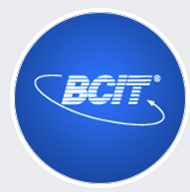
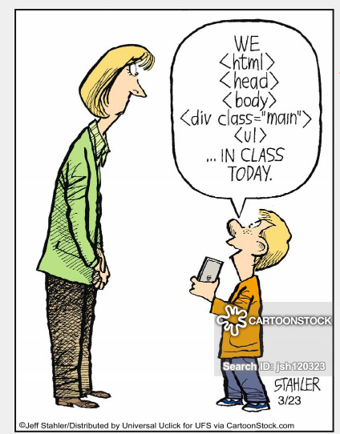

Instructor: Amir Amintabar
Resume: html version
Resume: PDF version
Post Card
I am Lynn HR Sohn and I moved from South korea back in 2006.
Through many trial and errors, I have finally reached the beginning of the end.
I started out with a Honors Medicinal Chemistry
in University of Waterloo and swithed my major to Criminology at SFU to
become a lawyer.
Throughout my studies at SFU, I realized I have a great passion for programming.
I fell in love with the process of creating something functional from a blank page.
Since I was nearing the end of my bachelors, I decided that it was only
rational that I finish one and restart on a new journey.

Click on the image to get to BCIT Webpage
CST Diploma 2019 September
These are the courses I am taking in the first semester
of my CST program journey:
Information technology professionals spend time each day communicating orally and in writing with their supervisors, colleagues and clients. As problem-solvers and entrepreneurs in industry, you need to communicate quickly, clearly, and effectively. This course will teach you how to be a professional and efficient communicator at work. You will write effective business correspondence and instructions and deliver a formal oral presentation to your set. The first term establishes the principles and basic patterns on which you will build more advanced applications in the second term.
Comp 1113 is partially discrete mathematics, partially an introduction to linear equations. The purpose of this course is to give a strong foundation for future technical and programming courses. The course is divided into three parts: (1) Boolean algebra and design of logic circuits; (2) number systems and data representation; and (3) functions, linear equations, vectors and matrices.
This hands-on course is the foundation for all future programming courses and complements COMP 1536 and COMP 1910. This course introduces the fundamental concepts of programming including design, development, testing, debugging simple programs, as well as error-handling, and problem solving.
This course is a web design and programming course with an emphasis on good planning, interface design, multimedia, client-side scripting with JavaScript, server-side scripting, and best practices. COMP 1536 will provide students with a solid understanding about how web applications are constructed and deployed. Students will be taught to use client-side RAD tools in order to enhance their productivity. Students will complete a number of assignments and exams as well as one larger project.
The course covers topics of importance to new and continuing students on how to balance school and related activities to enhance chances of success in their academic careers. In this course students will learn a variety of different techniques to improve study habits, note taking, and time management skills. The class will also present other topics of interest to CST students and will introduce students to various support systems at BCIT.
Business Analysis and Systems Design is the study of concepts, processes and tools that professionals use to plan and develop information systems to industry standards. Students learn how to ask implicit questions, to create and document communication plans and to make better decisions prior to creating a software system. Beginning with an introduction to the Software Development Life Cycle (SDLC), students work in teams to initiate the system process, analyze problems, discover requirements and create a logical design. Topics include: techniques used in the discovery of business requirements, traditional approaches to data and process modelling, entity-relationship diagrams, and an introduction to relational database normalization. Agile life cycles such as Scrum are also introduced and compared to more planned life cycles such as waterfall. By the end of this course, successful participants will be able to use tools and methods commonly used in industry to analyze, design, and implement information systems as confirmed by a term project.
Students learn to work in a collaborative environment and complete a small-scale software project: a web app. Design and managing of implementation concepts will be introduced: User Experience Design (XSD) and Agile methodology. The course takes students through the UX design process which includes creating and administering surveys & interviews, creating personas and user stories, designing wireframes, and performing user tests with a developed implementation that is based on the UX design process. Students will use the Agile methodology to manage the software process. Software management workflow also includes using version control, version control basics, utilizing web technologies (JavaScript, CSS, HTML, data persistence via NoSQL data technologies). Some of the JavaScript topics include DOM manipulation, event handling, web storage, AJAX calls and using JQuery in order to create a rich web app.

Click on the image to go see funny cartoons relating to Computing Science!!